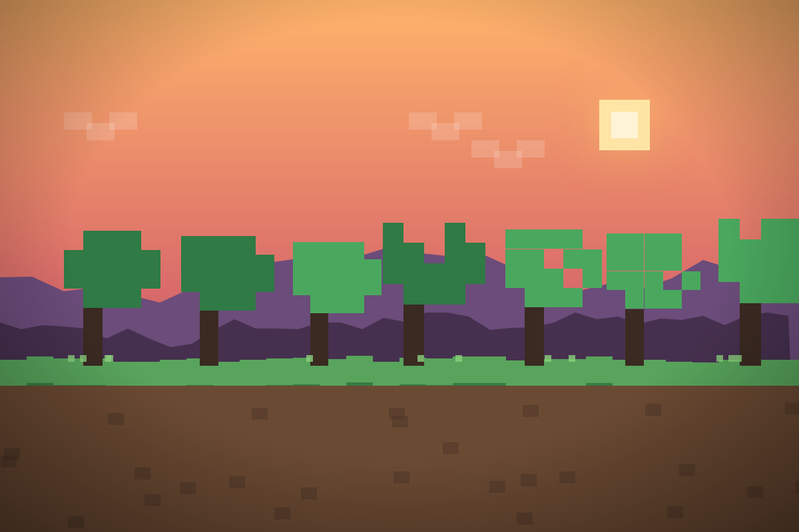
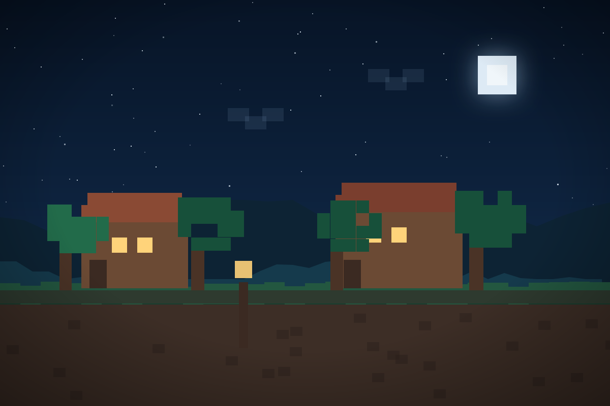
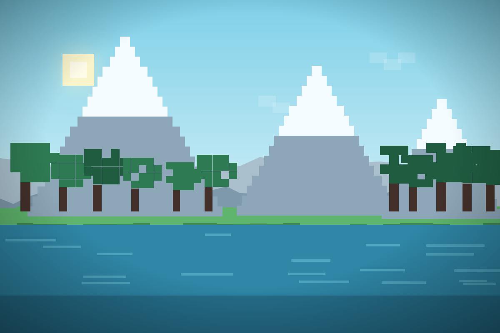
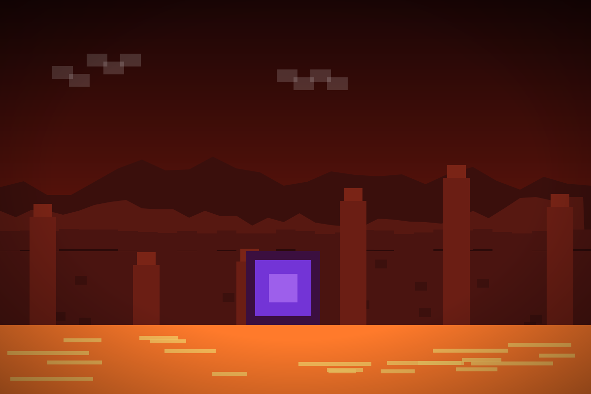
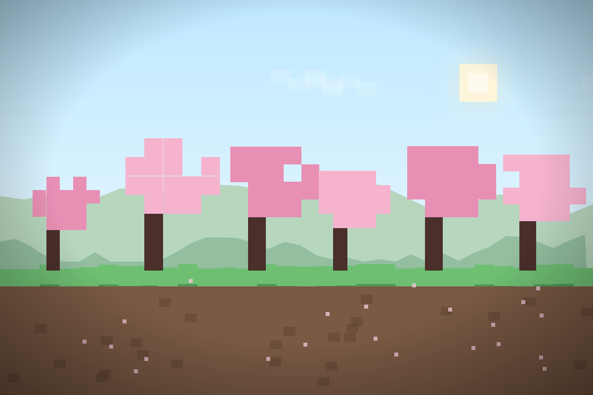
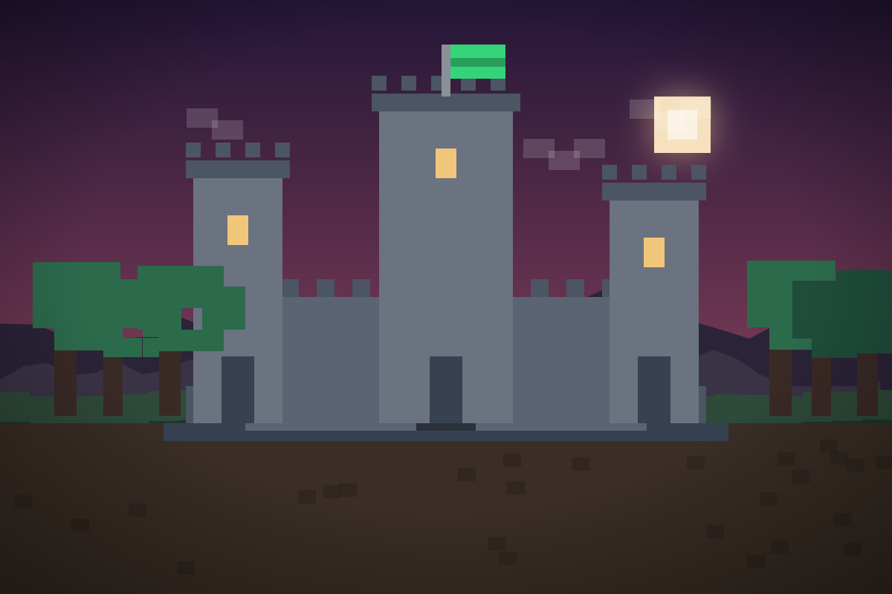

Server Tool · Minecraft server manager
Minecraft,
under control.
Run unlimited Minecraft servers from one calm, local desktop app. One-click installs, live CPU and RAM, safe stops and world backups.
Features
Everything, in one window.
Every screen is built around the daily routine: start, watch, fix, back up, repeat.
Easy to use
Create a server in four clicks. Pick the software, choose a version, set memory and press start — no terminal required.
Minecraft server tools
Vanilla, Paper, Purpur and Fabric installers, plus whitelist, OP and ban management in one place.
Modern interface
A dark, focused dashboard with a live console, file browser and server.properties editor that stays readable.
Fast experience
Native Electron shell, instant navigation and console output that keeps up with a busy server.
Safe process control
Graceful stop, a 30 second wait, then only the JVM process tree is terminated. Auto-restart never loops forever.
Backups & add-ons
Cron-style ZIP backups with retention, plus Modrinth search that drops plugins or mods in the right folder.
Download
Get Server Tool.
Grab the current Windows build. The portable ZIP needs no installer — extract it anywhere and launch the executable.
- Software
- Server Tool
- Current version
- v1.2.1
- File size
- 157 MB
- Compatibility
- Windows 10 / 11 · x64
- Format
- ZIP · portable
- Java
- 17 or 21+
Archived versions are listed for reference only.
—
Portable build. Extract the folder, then run Server Tool.exe.
Gallery
Worlds worth showing off.
Voxel scenes for inspiration. Open any card on Pinterest to explore builds, landscapes and shaders.

Sunset Plains
Golden hour over blocky plains and oak trees.

Night Village
Lantern-lit windows and a quiet cobblestone street.

Mountain Lake
Snowy peaks mirrored in a still voxel lake.

Nether Portal
Lava, basalt and a portal glowing violet.

Cherry Grove
Pink blossoms over rolling green hills.

Dusk Castle
A stone keep silhouetted against the last light.
About
Made by a server owner.
Built for the daily routine of running Minecraft worlds — not for a product demo.
I’m FerKunGsXD, a developer and Minecraft server owner from Thailand. I built Server Tool because the tools I used were split across ten windows, half-finished scripts and a lot of guesswork.
Server Tool brings the daily routine into one desktop app: create a server, see what it is doing, fix what broke and keep the world safe. The interface ships in Thai and English.